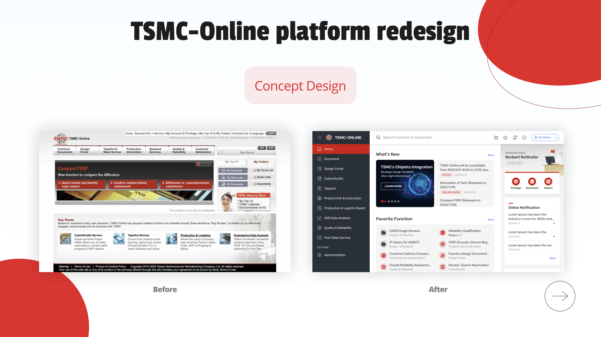

01 · Problem Statement
A platform that powers the global chip supply chain — due for renewal
TSMC-Online is the tape-out service platform that TSMC's international clients depend on to manage their entire manufacturing process — from selecting reticle field layout templates, to requesting technical documents, examining prototype stages, iterating on designs, and reviewing logistics reports. The platform is rebuilt every 10 years, and this was our window.
The core challenge: TSMC-Online was constructed by multiple IT departments independently, resulting in an IA that is fractured and inconsistent. Users couldn't build navigation habits, got lost mid-task, and struggled to understand why certain functions were inaccessible to them.
Team
5 designers — UX/UI, UX, UI specialists
Challenge
Fragmented IA across many IT departments
Timeline
Apr 2021 – Dec 2021 (10-yr renewal cycle)
Kay's scope
In a team of 5 designers, I owned UX/UI design end-to-end — conducting user research, running tree testing sessions, producing wireframes, high-fidelity UI mockups, and interactive prototypes. My work directly shaped the homepage architecture and the navigation system.
02 · User Research
488 users surveyed — two distinct personas, one broken experience
Before touching any wireframe, we ran a structured survey across TSMC's entire international client base. Two user groups emerged with fundamentally different relationships to the platform: expert end users who use it regularly, and cross-role users who juggle multiple responsibilities.
488
Total end users
surveyed
76.8%
Expert users
(375 people)
23.2%
Cross-role users
(113 people)
2
Distinct personas
identified
Expert user breakdown by job function
Foundry Manager 24%
Planner 17.6%
Designer 11.5%
R&D 10.9%
Procurement 3.7%
Project Manager & Others 31.3%
PERSONA 1
End User — TSMC's International Client
Uses TSMC-Online regularly for tape-out workflows. Deeply familiar with a narrow set of functions but struggles to locate documents across the fragmented IA. Wants faster access to frequently used tools without having to re-navigate every session.
PERSONA 2
CSV & Region Admin — TSMC Internal User
Manages multiple client accounts and cross-role permissions simultaneously. Regularly needs to give instructions across functions but faces unclear permission boundaries. Needs visibility into what clients can and cannot access — and why.
Difficulties reported — Expert users vs Cross-Role users (raw data)
Key research findings
Expert ≠ Self-sufficient
Expert users give fewer instructions than cross-role users — meaning expertise doesn't prevent navigation struggles. Even power users get stuck.
Foundry Managers carry the load
96% of Cross Role users who frequently give instructions (>80%) are cross-roled as Foundry Managers — a single role type carrying disproportionate workflow burden.
Documents are the #1 pain point
"Not easy to find documents" ranked as the top difficulty across both Expert and Cross Role users. The platform's document architecture was the most urgent problem to solve.
03 · Problem Statement
Three pain points. One fragmented platform.
From the survey data, tree testing sessions, and user interviews, three core pain points consistently emerged across both user groups. These became the design brief — every UX decision had to directly address at least one of them.
Pain points validated by survey data
1
Not easy to find documents
Documents are distributed across multiple IT-owned sections with no consistent naming or location logic. Users resort to memorizing exact paths rather than navigating by meaning.
2
Can't identify the right function
The platform's function labels are technical and role-ambiguous. Cross-role users especially struggle to identify which of several similar functions applies to their current task.
3
Unclear access permissions
Users encounter locked functions with no explanation of why access is restricted or how to request it. This creates dead-ends mid-workflow and erodes trust in the platform.
04 · UX Strategy
From pain points to design principles
Before redesigning any screen, we established three strategic directions that would guide every information architecture and UI decision in the project. These weren't aesthetic choices — they were structural responses to the research findings.
User Research
Problem Statement
UX Strategy
Concept Design
Original TSMC-Online — before redesign
Direction 01
Navigation clarity & future flexibility
Restructure the left-side navigation with consistent icons and labels. Build a system that can accommodate new functions as the platform grows — without breaking existing user habits.
Direction 02
Personal shortcuts on homepage
Surface each user's most-used functions and latest status on the homepage — replacing a generic entry point with a role-aware, personalized workspace overview.
Direction 03
"My Online" — personal hub
Introduce a centralized personal data panel (My Space) for notifications, subscriptions, favorite functions, and permission management — giving users a single place to understand their access context.
05 · Concept Design
Homepage redesigned around four functional zones
The redesigned homepage isn't just visually cleaner — it's architecturally intentional. Every zone maps directly to a user need identified in research. The layout builds a spatial habit: users know exactly where to look for what, every time they log in.
Header — Global search + identity
A unified search bar lets users find any function or document from anywhere on the platform. "My Online" profile chip gives instant access to personal settings — solving the access-confusion pain point.
Navigation — Persistent sidebar with icons
All platform functions displayed in a structured, icon-anchored sidebar. Icons provide visual memory anchors so users build navigation habits quickly — even across infrequent sessions.
Main Content — Role-filtered workspace
What's New, Favorite Function, and You Might Also Like — three content blocks that surface relevant, role-specific items. Users see what matters to them, not everything that exists.
My Space — Personal command center
Right-panel hub for online notifications, subscriptions, favorite functions, and permission status. The first place on TSMC-Online where users can see and understand their own access context at a glance.
Final homepage design — annotated anatomy
Final design — production-ready UI
Before & After
Before — Original TSMC-Online
After — Redesigned Platform

06 · Results & Takeaways
What a 10-year redesign taught us about design strategy
This project is now live for TSMC's international clients. Beyond the shipped product, the process surfaced three lessons that apply to any large-scale, long-lifecycle enterprise platform.
Plan your MVP with iron discipline
A platform renewing every 10 years attracts enormous scope creep. A clear MVP plan — anchored to the three validated pain points — was the only way to protect delivery quality and timeline from out-of-scope requests.
User testing never ends
Design doesn't stop at handoff. Continuous iteration after launch — collecting feedback, monitoring usage, running follow-up tests — is what separates a shipped product from a good product.
Involve engineering upfront
Enterprise platforms carry deep technical constraints. Understanding those limitations at the strategy stage — not after mockups are done — prevents costly redesigns and keeps the design-to-dev relationship collaborative, not adversarial.
Live product
TSMC-Online is now live for TSMC's international clients worldwide. Access is restricted to TSMC's global client network. online.tsmc.com